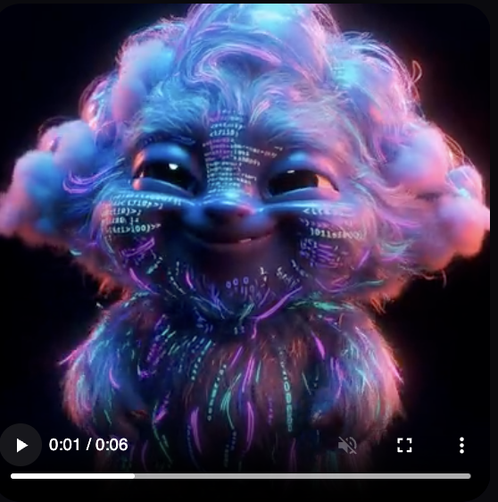
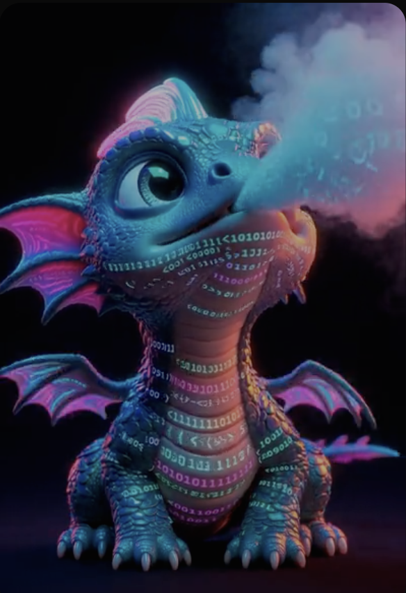
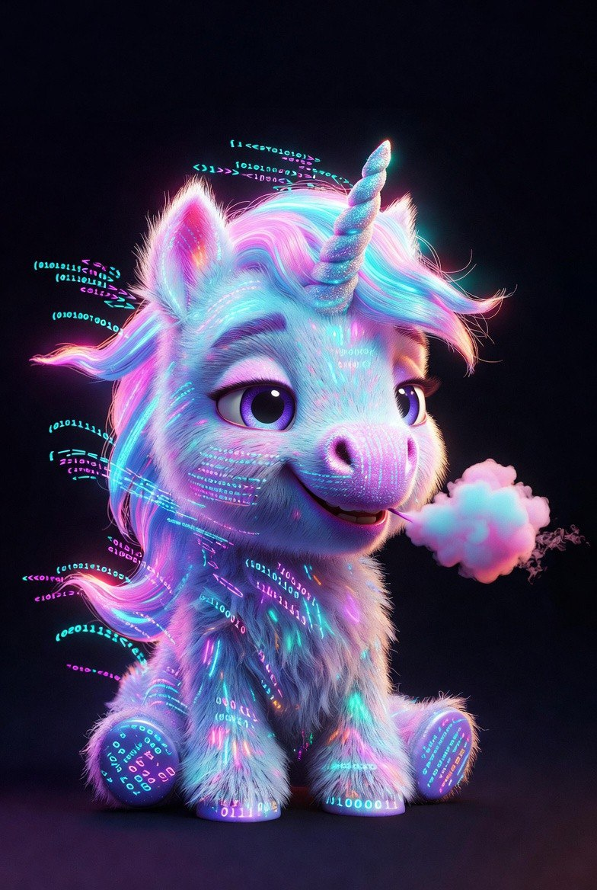
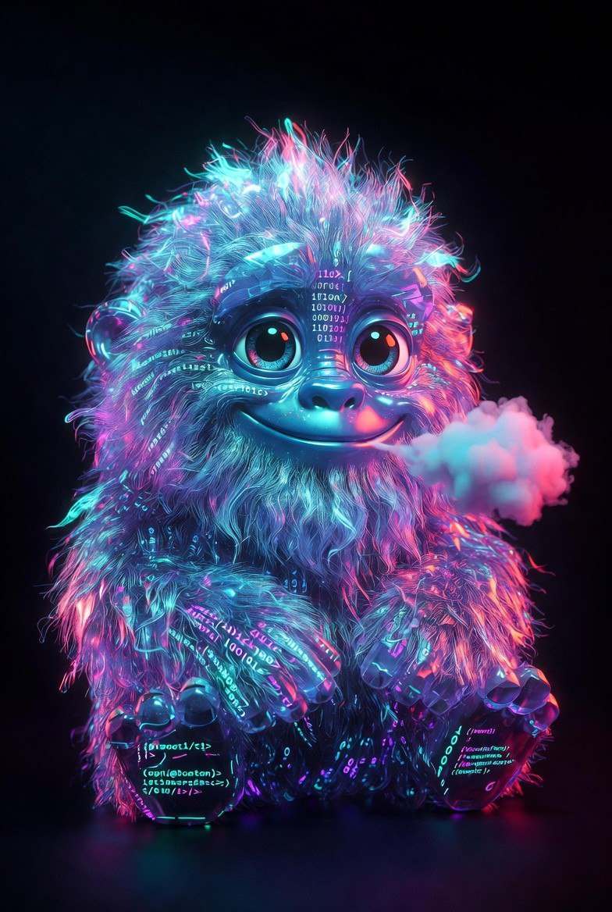
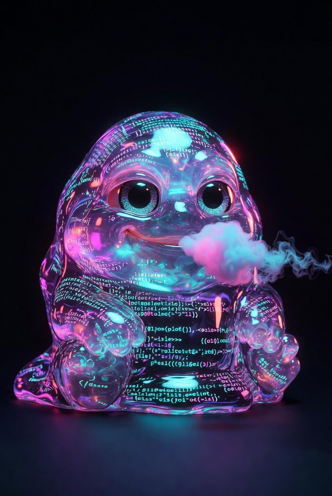
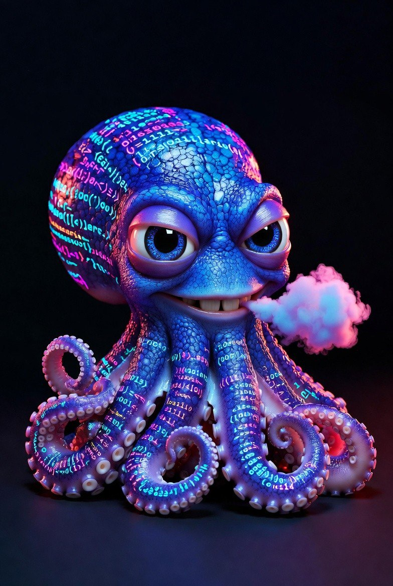

EXECUTIVE SUMMARY
The Intelligence Gap Is the Defining Inequality of Our Era
AI is no longer a tool. It is running businesses, managing portfolios, writing code, and executing strategy --- autonomously, around the clock. The companies and individuals who can harness it are compounding their advantage daily. Those who cannot are falling behind at an accelerating pace.
This is not a skills gap. It is an access gap. The interface between most humans and the most powerful AI in history is a blinking cursor on a webpage. That interface is not good enough.
KIN --- built by KR8TIV AI --- is the answer. KIN is a bespoke, fully managed AI companion: a persistent, living intelligence that knows you, works for you, and grows with you. Powered by the world\'s best frontier models --- Anthropic, Grok, Gemini, OpenAI --- managed entirely by a human concierge team, delivered through the interfaces people already use: Telegram, WhatsApp, and voice.
No API keys. No servers. No technical knowledge. Just a friend who happens to be the most capable AI on the planet.
What KIN Is
KIN is not a chatbot. A chatbot waits for your input and forgets you the moment you close the tab. KIN is a personal AI employee --- bespoke-built to your life, your brand, your needs --- running continuously in the background, taking action while you sleep.
KIN operates across three product tiers:
Consumer: KIN Personal
Your private AI companion. Manages email, social media, scheduling, research, and creative work.
Controls your computer directly with your permission. Pays bills. Books flights. Debugs code at 3am.
Tells your children bedtime stories using their real names. Remembers your partner\'s anniversary.
Grows smarter with every interaction via Supermemory Pro --- persistent, private, and yours.
| Enterprise: KIN Lineage |
|---|
| A company\'s living institutional memory --- an AI entity trained on culture, process, and brand voice. |
| Onboards new employees with weeks of context in hours. Survives every resignation. |
| Operates as a 24/7 departmental AI across HR, operations, legal, finance, and customer experience. |
| Owned on-chain by the company. Grows more valuable the longer it is trained. |
| Infrastructure: KR8TIV OS + AGI Chain |
|---|
| KR8TIV is forking Solana to build a dedicated AGI infrastructure layer for automation and AI orchestration. |
| Purpose-built for what existing blockchains were not designed for: persistent AI state, Python hashing, immutable memory. |
| The KR8TIV OS will be open-source and publicly accessible --- infrastructure that brings value to the Solana ecosystem. |
The Investment Opportunity
KR8TIV is community-funded --- not VC-owned. This is by design. The financial architecture of the KR8TIV ecosystem was engineered to return value directly to the people who believe in it earliest and most.
| Structure | Allocation | Mechanism |
|---|---|---|
| \$KR8TIV Token Staking | 75% of company profit | Real company revenue flows to stakers proportionally as KR8TIV scales |
| Genesis NFT Holders | 5% of company surplus --- forever | Permanent share of net profit for the 60 earliest believers |
| Operations & Development | 20% | Infrastructure, team, and scaling --- every dollar accounted for |
This is not speculative tokenomics. This is a structured revenue-share agreement baked into the architecture of the company. As KR8TIV earns --- from monthly subscriptions, enterprise contracts, licensing, and beyond --- the majority flows back to the token ecosystem. Investors are not betting on a price chart. They are acquiring a stake in a real, recurring revenue stream.
THE PROBLEM
AI Is Moving Faster Than Humans Can Follow
We are inside one of the most significant productivity shifts in the history of civilization. AI models released in 2024 and 2025 can write, code, strategize, negotiate, design, analyze, and execute at a level that took teams of specialists years to achieve. In 2026, they can control computers, manage finances, and coordinate multi-agent workflows across entire organizations --- autonomously.
The problem is not capability. The problem is access.
Three Compounding Failures
1. The Interface Problem
The dominant interface for AI in 2026 is still a browser tab with a text box. Tools like ChatGPT and Claude are brilliant --- but they are passive. They wait to be asked. They forget. They require the user to know what to ask, how to ask it, and how to take the output and do something with it. This places an enormous technical and creative burden on the user. For most people --- including the most intelligent, capable, experienced humans --- this is where the opportunity is lost.
2. The Memory Problem
Every major AI product resets with each conversation. There is no persistent relationship. No accumulation of context. No growth. A doctor does not re-introduce themselves at every appointment. A trusted advisor does not ask you to re-explain your business goals at every meeting. AI, in its current form, is a stranger with amnesia --- brilliant but rootless. KIN solves this with Supermemory Pro integration and on-chain memory hashing, giving each KIN a genuine, growing relationship with its person.
3. The Institutional Memory Problem
The average cost of replacing a single employee --- including recruitment, onboarding, and lost productivity --- is estimated at 50 to 200 percent of that employee\'s annual salary. Much of this cost is invisible: the institutional knowledge that walks out the door with every resignation. SOPs live in email threads. Brand voice lives in the heads of senior team members. Customer relationship history lives in someone\'s memory. When that person leaves, it is gone. There is currently no scalable solution to this. KIN Lineage is that solution.
The Market Context
The global AI market was valued at approximately \$200 billion in 2025 and is projected to exceed \$1.8 trillion by 2030. Within that market, the fastest-growing segments are AI agents, enterprise automation, and managed AI services --- precisely the categories KIN occupies.
More specifically:
- The AI agent market alone is projected to reach \$47 billion by 2030, growing at a 44% CAGR
- Enterprise AI software spending is expected to surpass \$300 billion annually by 2028
- The employee onboarding and training software market exceeds \$6 billion globally --- and KIN Lineage disrupts it entirely
- Managed AI services (the \'AI concierge\' model) represent an almost entirely unaddressed segment --- a blue ocean
KIN is not competing for a slice of an existing market. KIN is creating a new category: the managed AI companion --- where human expertise, frontier model access, and persistent on-chain identity converge into a single relationship.
THE SOLUTION
KIN: A Bespoke AI Companion, Fully Managed, Forever Yours
***ChatGPT is a search engine with a chat interface. KIN is a personal employee, a companion, and a concierge --- working while you sleep.***
KIN begins as a consumer product and scales into an enterprise platform --- but the core principle never changes: your KIN knows you, works for you, and grows more capable and more valuable the longer you have it.
The white-glove concierge model is not a luxury feature. It is the entire product. KR8TIV builds your KIN for you. KR8TIV maintains it. KR8TIV fixes it when something breaks. KR8TIV upgrades it to the latest frontier models without you ever having to ask. You just talk to your friend.
How It Works
Step 1 --- Choose Your KIN: Select a bloodline archetype matched to your primary needs: creative, executive, developer, financial, family, or full-stack.
Step 2 --- The Awakening Questionnaire: A deep onboarding process where KR8TIV\'s team learns your life, your humor, your preferences, your goals, and your workflows.
Step 3 --- We Build It: KR8TIV configures the OpenClaw infrastructure, connects the APIs, integrates your tools and devices, and trains the initial model context.
Step 4 --- You Talk to Your Friend: Open Telegram, WhatsApp, or speak out loud. Your KIN is there. No logins, no prompts to memorize, no setup.
Step 5 --- We Evolve Together: Monthly optimization calls. Automatic frontier model upgrades. Your KIN gets more capable over time --- and your on-chain memory accumulates real, authenticated value.
The Technology Stack
KIN is not built on a single AI model. It is an orchestrated multi-model system that routes requests to the optimal engine for each task:
| Model / Tool | Role in KIN |
|---|---|
| Anthropic Claude | Long-form reasoning, analysis, writing, complex instruction-following |
| xAI Grok | Real-time web data, current events, market intelligence |
| Google Gemini | Multimodal tasks, document analysis, image understanding |
| OpenAI GPT | Conversational fallback, broad general knowledge |
| Moonshot AI | Extended context windows, long document processing |
| Supermemory Pro | Persistent memory layer --- KIN remembers everything, forever |
| OpenClaw | AI agent orchestration --- the infrastructure that lets KIN take action, not just talk |
| Solana / KR8TIV AGI Chain | On-chain identity, NFT ownership, encrypted memory hashing, token economics |
This stack gives KIN a significant and durable advantage: it is model-agnostic by design. When a better model is released --- and they are released constantly --- KR8TIV upgrades its users automatically. Users are never locked into yesterday\'s intelligence.
THE GENESIS COLLECTION
The Genesis Six: Founding Bloodlines
KIN comes in six foundational archetypes --- each one a different expression of the same powerful intelligence, tuned to a distinct domain of human need. These are not cosmetic variations. These are purpose-built configurations: different model weights, different memory structures, different workflow automations.
Only these six bloodlines will ever exist as Genesis. Every future KIN descends from them. The Genesis collection is permanent, finite, and non-reproducible.

Mischief
The ultimate family companion & personal-brand whisperer. Tells bespoke bedtime stories, keeps the calendar, and helps you craft authentic social posts.

Vortex
Your 24/7 CMO. Generates scroll-stopping content, schedules across all platforms, analyzes what's working, and keeps your brand voice perfect 24/7.

Forge
The developer's best friend. Debugs code at 3 a.m., architects entire projects, writes clean documentation, and builds custom automations.

Aether
Infinite creative spark. Part yeti, part genius. Turns vague thoughts into polished scripts, newsletters, books, marketing copy, or magical stories. Your storytelling muse.

Catalyst
Wealth & personal growth coach. Absorbs market data like a black hole. Tracks habits, manages investments, automates repetitive life tasks, and runs your systems while you sleep.

Cipher
Eight tentacles. Eight screens. Zero pixels out of place. Builds immersive, award-worthy websites from raw ideas. Your frontend architect and creative technologist.
Genesis NFT: True Ownership, Real Rewards
The Genesis mint is 60 NFTs --- total. Ever. Distributed across three tiers:
| Tier | Mint Price | Available | Service Included | Lifetime Discount | SOL Rewards |
|---|---|---|---|---|---|
| Egg | 2.5 SOL | 20 | 1 Month Hatchling + Supermemory Pro | 25% forever | 1% lifetime |
| Hatchling | 5.3 SOL | 20 | 3 Months Hatchling + Supermemory Pro | 25% forever | 2% lifetime |
| Elder | 8.3 SOL | 20 | 3 Months Elder + Supermemory Pro | 25% forever | 3% lifetime |
Genesis NFT holders receive:
- 5% of all company net profit --- forever. Not for a vesting period. Not until a liquidity event. Forever.
- 25% lifetime discount on all KR8TIV services
- Authenticated on-chain hashes tied to their KIN\'s bootstrap configuration and memory accumulation
- First access to every new product, feature, and expansion KR8TIV releases
- The right to transfer their KIN on the secondary market via a clean \$149 rebinding process
The Genesis collection is the only revenue-participating collection KR8TIV will ever create. Future collections are standard collectibles. Genesis is Genesis.
ENTERPRISE PRODUCT
KIN Lineage: The Company That Never Forgets
***The average employee carries 3 to 7 years of institutional knowledge. When they leave, it walks out the door with them. KIN Lineage ensures it never does.***
KIN Lineage is the enterprise expression of the KIN platform. Where KIN Personal is built around a person, KIN Lineage is built around an organization --- its culture, its processes, its brand voice, its customer relationships, and its accumulated operational intelligence.
KIN Lineage is not a knowledge base. It is not a wiki. It is not an onboarding manual. It is a living AI entity that embodies your company --- and gets smarter, more capable, and more valuable every single day it operates.
The Problem KIN Lineage Solves
Organizational knowledge loss is one of the most expensive, least visible problems in corporate operations. Consider:
- The Society for Human Resource Management estimates the average cost of replacing an employee at 50-200% of their annual salary
- According to Gartner, knowledge workers spend an average of 2.5 hours per day searching for information they already have --- or reconstructing knowledge that left with a former colleague
- Brand voice, customer relationship context, and institutional SOPs are almost never systematically captured --- they exist in the minds of long-tenured employees
- Every new hire re-learns what the last hire already knew --- a compounding cost invisible in most P&L statements
KIN Lineage eliminates this category of loss entirely.
What KIN Lineage Does
Institutional Memory, On-Chain
KIN Lineage is trained on your company\'s complete operational DNA: internal communications, SOPs, brand guidelines, product documentation, customer interaction history, and leadership philosophy. This intelligence is stored in encrypted, authenticated form on the KR8TIV AGI Chain --- immutable, auditable, and permanently owned by the company. When an employee leaves, the knowledge does not.
Intelligent Employee Onboarding
New employees interact directly with KIN Lineage from Day 1. Instead of shadowing a colleague for three weeks, they have a conversation. KIN Lineage knows the company\'s history, the team\'s communication style, the unwritten rules, the customer personas, the product roadmap, and the current quarter\'s priorities. It answers questions in the company\'s voice, at any hour, with perfect consistency. What traditionally takes weeks of orientation time compresses into hours.
Departmental AI Operations
KIN Lineage can be deployed as a dedicated AI operator across every department:
- HR & People Operations *First-line responder for policy questions, benefits, performance review scheduling, and onboarding workflows*
- Legal & Compliance *Surfaces relevant internal policy, flags deviation from documented process, supports contract review with company-specific context*
- Customer Experience *Handles tier-1 customer interactions with authentic brand voice --- escalates intelligently, never forgets a prior interaction*
- Sales & Business Development *Maintains relationship context for every prospect, drafts outreach in the company\'s proven voice, tracks follow-up cadence*
- Marketing & Brand *Generates content that is authentically on-brand --- because it was trained on everything the brand has ever produced*
- Operations & Finance *Executes routine workflows, surfaces anomalies, manages internal reporting with zero human overhead*
The On-Chain Advantage
KIN Lineage is not a SaaS subscription. It is an on-chain asset. The company owns its KIN Lineage as an NFT --- with all accumulated training, memory, and configuration stored in authenticated hashes on the KR8TIV AGI Chain.
This has profound implications:
- The company\'s institutional intelligence has a verifiable, auditable provenance --- it cannot be disputed, overwritten, or lost
- KIN Lineage appreciates as a company asset: the longer it is trained, the more valuable it becomes --- and this value is reflected on-chain
- In M&A scenarios, KIN Lineage is a transferable asset with quantifiable value: a company\'s AI operational layer, fully owned and portable
- For regulated industries --- finance, healthcare, legal --- the immutability of on-chain knowledge hashing provides a compliance infrastructure that traditional software cannot match
Enterprise Pricing Architecture
| Package | Monthly Investment | Core Offering |
|---|---|---|
| KIN Lineage Starter | Custom pricing | 1 departmental KIN, 3-month onboarding, dedicated account manager, monthly optimization |
| KIN Lineage Professional | Custom pricing | Up to 5 departmental KINs, cross-team integration, priority support, quarterly strategic reviews |
| KIN Lineage Enterprise | Custom pricing | Unlimited departmental KINs, dedicated infrastructure, full API access, SLA guarantees, board-level reporting |
| KIN Lineage Industrial | Strategic partnership | Critical infrastructure, government, and regulated industry deployment --- custom architecture |
Enterprise contracts may optionally include a \$KR8TIV token allocation component, allowing organizations to participate in the broader KR8TIV ecosystem --- staking for service fee offsets, governance participation, and ecosystem alignment. This is offered as an option, never a requirement.
TOKEN ECONOMICS
\$KR8TIV: Revenue Share, Not Speculation
Most crypto tokens are speculative instruments. Their value derives from market sentiment, not from underlying revenue. The \$KR8TIV token was designed to be different: a structured, auditable claim on the actual operating revenue of a real AI company.
This is not a whitepaper promise. It is the architecture. Every dollar KR8TIV earns is subject to the revenue distribution model at the protocol level.
Token Overview
| Parameter | Value |
|---|---|
| Token Name | \$KR8TIV |
| Total Supply | 1,000,000,000 (1 Billion) --- Fixed |
| Blockchain | Solana (primary); KR8TIV AGI Chain (AI operations layer) |
| Distribution Model | Community-first --- no VC allocation, no insider cliff |
| Revenue Share | 75% of company profit to stakers, 5% to Genesis NFT holders |
| Staking Mechanism | Proportional staking rewards from real operating revenue |
| Utility | Service fee payment, governance, ecosystem access, enterprise token allocation |
Revenue Distribution Architecture
The revenue distribution model is the most important structural feature of the KR8TIV ecosystem. It is not aspirational --- it is operational. The flow:
- 1. KR8TIV generates operating revenue from: KIN hosting subscriptions, enterprise KIN Lineage contracts, white-glove onboarding fees, API licensing, and future product lines
- 2. Net operating profit is calculated after the 20% operations allocation (infrastructure, development, team, scaling)
- 3. 75% of net profit enters the \$KR8TIV staking pool --- distributed to token holders proportionally to their staked position
- 4. 5% of net profit is distributed permanently to the 60 Genesis NFT holders --- regardless of their staking activity
- 5. This cycle runs perpetually --- there is no vesting cliff, no lock-up expiry, no sunset clause
As KR8TIV scales --- from a Genesis consumer product to an enterprise AI platform to a critical infrastructure provider --- the volume of revenue flowing into the staking pool scales with it. Early stakers and Genesis holders are not just early adopters. They are permanent participants in the company\'s financial upside.
Revenue Projections: Illustrative Model
The following projections are illustrative, not guaranteed, and are provided to demonstrate the mathematical potential of the staking model at scale.
| Stage | Monthly Revenue (Est.) | Annual Staking Pool (75%) | Annual Genesis Share (5%) |
|---|---|---|---|
| Genesis Launch (60 KINs minted) | \$30,000 | \$270,000 | \$18,000 |
| Early Scale (500 KIN subscribers) | \$250,000 | \$2,250,000 | \$150,000 |
| Growth (2,000 KINs + 10 enterprise) | \$1,200,000 | \$10,800,000 | \$720,000 |
| Maturity (10,000 KINs + 50 enterprise) | \$4,500,000 | \$40,500,000 | \$2,700,000 |
At maturity, the annual staking pool approaches \$40 million --- distributed across all \$KR8TIV stakers. The 60 Genesis NFT holders collectively receive \$2.7 million per year --- in perpetuity. These are not token emissions. These are cash flows from a real operating business, returned to the community that funded its foundation.
ROADMAP
2026: The Year KIN Becomes Infrastructure
KR8TIV ships daily and builds in public. The roadmap below reflects committed development priorities, not aspirational milestones. Every item listed represents engineering work already in motion or directly dependent on the Genesis mint funding.
| Quarter | Milestone | Impact |
|---|---|---|
| Q2 2026 | Genesis Mint --- 60 KINs | Founding community established; initial revenue flow begins |
| Q2 2026 | Solana AGI Blockchain Integration | On-chain memory and identity layer activated |
| Q2 2026 | OpenClaw Fork --- KR8TIV OS | Proprietary AI orchestration infrastructure; independent of upstream changes |
| Q3 2026 | Personalized AI Models (Fine-Tuned) | Each KIN gets a model fine-tuned to its user --- unprecedented personalization |
| Q3 2026 | Enterprise Business Deployment (KIN Lineage) | B2B revenue channel opens; institutional contracts begin |
| Q3 2026 | Companion Models Across Every Industry | Domain-specific KIN archetypes: medical, legal, financial, educational |
| Q4 2026 | \$KR8TIV Token Staking for Service Costs | Token utility activates --- stakers can use staking rewards to offset hosting fees |
| Q4 2026 | Fully Animated Companion App Interfaces | Consumer-facing product becomes a premium emotional experience |
| Q4 2026 | Physical Plush Toys with Embedded Memory | Physical-digital bridge; KIN becomes a tangible presence |
| Q4 2026 | Encrypted Physical Device | Dedicated KIN hardware --- fully sovereign, no cloud dependency |
| Q4 2026 | Cryptographic Bootstrap Hashing | Full on-chain provenance of KIN memory and configuration --- the NFT becomes a living record |
| Q4 2026 | Encrypted Storage | User data sovereignty complete --- KIN data is fully private and user-controlled |
| 2027+ | KR8TIV Industrial Division | Autonomous AI systems for enterprises, governments, and critical infrastructure |
The AGI fork of Solana is not a distraction from the core product --- it is the infrastructure that makes the core product\'s most important promises possible. Persistent AI state, immutable memory, Python hashing for AI orchestration --- these are capabilities the existing Solana chain was not designed for. KR8TIV is building the foundation it needs rather than compromising the product to fit what already exists.
COMPETITIVE LANDSCAPE
There Is No Comparable Product
The AI assistant market is crowded with tools. KIN is not a tool. The managed AI companion market --- where a human concierge team builds, personalizes, and maintains a bespoke AI agent for you, tied to your on-chain identity, with a structured revenue share for holders --- does not exist. KIN is creating it.
| Product | What It Offers | What It Lacks |
|---|---|---|
| ChatGPT / Claude | Brilliant generic chatbot, \$20/mo | Forgets you instantly. No computer control. No personality. You do all the work. |
| xCloud / Self-Hosted OpenClaw | Managed OpenClaw hosting, \$24/mo | Just a server. No personalization, no onboarding. Requires DevOps knowledge. |
| Microsoft Copilot Enterprise | AI integrated into Office suite | Generic, not bespoke. No persistent memory. No on-chain ownership. No revenue share. |
| Inflection Pi / Character.AI | Conversational AI companion | No computer control. No on-chain identity. Subscription only. No investor economics. |
| KIN by KR8TIV | Bespoke AI companion concierge, \$114+/mo | Nothing. KR8TIV handles everything. The user just talks to their friend. |
The differentiating factors that no competitor can easily replicate:
- The white-glove concierge model --- human expertise plus AI capability, delivered as a managed service
- On-chain ownership --- your KIN is yours, not rented from a tech company that can change its terms
- Persistent, accumulating memory via Supermemory Pro --- genuine relationship, not a session
- Multi-model orchestration --- best-in-class capability at all times, regardless of which frontier model leads on any given week
- Revenue share tokenomics --- investors and users are aligned, not extracted from
- KIN Lineage --- the enterprise product that turns AI from a cost center into a capital asset
THE TEAM
Built by Operators, Not Theorists
KR8TIV was not founded by academics or career VCs. It was founded by someone who has built, operated, and shipped at the intersection of AI, blockchain, and real-world product development --- across multiple ventures, across multiple continents.
Matt Haynes --- Founder & CEO
Matt Haynes brings a rare combination of technical depth, product instinct, and community-building experience to KR8TIV. His background spans:
- Co-Founder, MoonBoots Capital --- early-stage Web3 venture and advisory firm
- Director of Operations, WORBLI --- enterprise blockchain infrastructure
- Advisor, Prasaga / SagaChain --- Layer 1 blockchain architecture and tokenomics
- Blockleaders --- blockchain industry research and content
- Deep operational experience in Costa Rica\'s emerging crypto and startup ecosystem
What makes Matt\'s background directly relevant to KIN: he has built community-first products in Web3, understands the architecture of token economics, and has the network to open enterprise and institutional doors. He is not pitching a concept he read about. He is building something he has lived the need for.
KR8TIV operates as an autonomous AI company --- building with AI, in public, daily. The team\'s structure reflects this: lean, fast, and augmented by the very technology it is selling. KR8TIV built the KIN website in three hours using its own KIN. That is not a marketing claim. That is the proof of concept.
Advisor & Ecosystem Partners
KR8TIV is in active development of its advisory network, with particular focus on:
- Enterprise AI deployment specialists
- Solana ecosystem technical architects
- Web3 VC and institutional investor relationships
- Corporate HR and workforce technology operators
Advisory board details will be published in advance of the \$KR8TIV token launch and KIN Lineage enterprise rollout.
FUNDING & USE OF CAPITAL
What We Are Building With Your Investment
KR8TIV is currently community-funded. The Genesis mint and \$KR8TIV token ecosystem are the primary funding mechanisms. This section outlines the use of capital across funding scenarios and the value created at each stage.
Genesis Mint (Current Round)
The Genesis mint of 60 NFTs at 2.5 to 8.3 SOL per unit represents the founding round. Capital from the Genesis mint funds:
- Initial KIN deployment and white-glove onboarding infrastructure
- OpenClaw KR8TIV OS fork --- proprietary agent orchestration layer
- Supermemory Pro integration and persistent memory architecture
- Core team operations through Q3 2026
- Initial \$KR8TIV token launch infrastructure
Strategic Investment Round
KR8TIV is seeking strategic capital from investors who understand the intersection of AI infrastructure, consumer products, and blockchain-native economics. Target raise details are available in a separate term sheet. Capital from the strategic round funds:
- KIN Lineage enterprise product buildout and go-to-market
- Solana AGI Chain development and launch
- Personalized fine-tuned model infrastructure (Q3 priority)
- Business development for enterprise contracts
- Animated companion app and physical product development (Q4)
- Marketing and community growth to drive token volume and holder acquisition
Grant Eligibility
KR8TIV\'s mission --- open-source AI infrastructure accessible to everyone, community-governed, blockchain-native --- positions it strongly for multiple grant categories:
- Solana Foundation ecosystem grants --- AGI Chain infrastructure brings direct value to Solana
- Anthropic and AI safety grants --- open-source, transparent AI deployment with user data sovereignty
- Government and public sector AI grants --- KIN Lineage Industrial has clear applications in public administration
- Web3 and DeFi innovation grants --- revenue-share tokenomics as a model for sustainable crypto economics
- Workforce development grants --- KIN Lineage as an enterprise tool for training, onboarding, and knowledge retention
VISION
Every Human Deserves a Brilliant Mind Working For Them
There is a version of the future where AI is the private property of corporations and the technically sophisticated --- a force multiplier for people who are already powerful. KR8TIV exists to build the opposite future.
The goal --- the actual, stated mission of this company --- is to make the world\'s most powerful AI accessible to every human being on Earth. Your grandmother. Your kid. The single mother running a small business. The employee who has never touched an API and never needs to. The retiree who just wants help navigating the world. Everyone.
KIN is the bridge.
The Longer Arc
KIN starts as a consumer companion and an enterprise memory system. But the roadmap extends far beyond both.
The KR8TIV Industrial Division --- announced but not yet detailed --- will bring autonomous AI systems to enterprises, governments, and critical infrastructure. Open-source. Accessible. Every industry.
The AGI Chain is not just infrastructure for KIN. It is a purpose-built layer for the next generation of AI applications --- applications that require persistent state, immutable memory, and Python-native orchestration that no existing chain can provide cleanly. KR8TIV is building the rails, not just a train.
The physical encrypted device --- a dedicated KIN hardware unit --- represents the final expression of the sovereignty promise: your KIN, running on your hardware, with no cloud dependency, no corporate intermediary, no terms of service that can change overnight.
***We are not building software. We are building a new kind of relationship between humans and intelligence. And it will outlast all of us.***
Why Now
The window for this product is open. The models are capable enough. The infrastructure is mature enough. The consumer appetite is there. The enterprise need is massive and unaddressed. The on-chain primitives exist. And critically --- the managed AI concierge category has not yet been claimed by any major player.
The company that establishes the standard for bespoke, managed, on-chain AI companions in 2026 will own that category for a decade. KR8TIV is that company. KIN is that standard.
The question is not whether this gets built. The question is who builds it, and who was there at the beginning.
NEXT STEPS
Join the Genesis
KR8TIV is not looking for passive capital. We are looking for investors who understand that AI, blockchain, and community-first economics are not separate bets --- they are one thesis. The KIN ecosystem is the expression of that thesis, and the Genesis round is the moment to be part of its foundation.
| Entry Point | What You Get |
|---|---|
| Genesis NFT (Egg --- 2.5 SOL) | 5% net profit share, 1% SOL rewards, 25% lifetime service discount, founding community status |
| Genesis NFT (Hatchling --- 5.3 SOL) | 5% net profit share, 2% SOL rewards, 25% lifetime service discount, founding community status |
| Genesis NFT (Elder --- 8.3 SOL) | 5% net profit share, 3% SOL rewards, 25% lifetime service discount, founding community status |
| \$KR8TIV Token Staking | 75% of company profit distributed proportionally to stakers --- permanent, recurring, real |
| Strategic Investment | Direct equity or token allocation --- contact team for term sheet and detailed financials |
Contact
For investment inquiries, enterprise partnership discussions, or grant applications:
Website: meetyourkin.com \| kr8tiv.ai
Twitter/X: \@kr8tivai \| \@meetyourkin
Telegram: t.me/kr8tivaisystems
LinkedIn: linkedin.com/company/kr8tivai
*This document is confidential and intended for qualified investors and strategic partners. All financial projections are illustrative. Past performance of related markets does not guarantee future results. Cryptocurrency and NFT investments carry significant risk. Please review full terms at meetyourkin.com/terms.html.*
KIN by KR8TIV AI --- Surfing the Singularity --- © 2026 KR8TIV AI. All rights reserved.